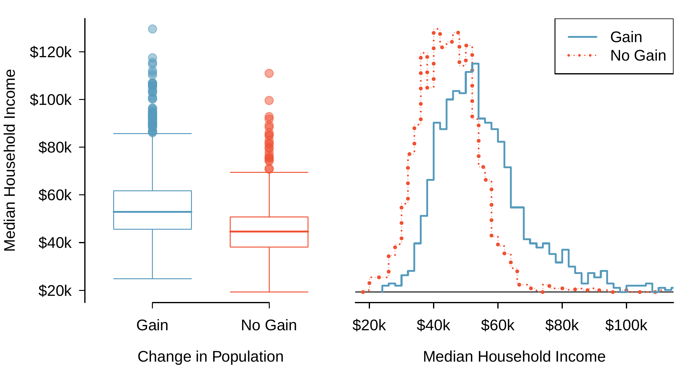

Section 2.2 Considering categorical data
In this section, we will introduce tables and other basic tools for categorical data that are used throughout this book. The
loan50 data set represents a sample from a larger loan data set called loans. This larger data set contains information on 10,000 loans made through Lending Club. We will examine the relationship between homeownership, which for the loans data can take a value of rent, mortgage (owns but has a mortgage), or own, and app_type, which indicates whether the loan application was made with a partner or whether it was an individual application.
Subsection 2.2.1 Contingency tables and bar plots
Table 2.2.1 summarizes two variables:
app_type and homeownership. A table that summarizes data for two categorical variables in this way is called a contingency table. Each value in the table represents the number of times a particular combination of variable outcomes occurred. For example, the value 3,496 corresponds to the number of loans in the data set where the borrower rents their home and the application type was by an individual. Row and column totals are also included. The row totals provide the total counts across each row (e.g. \(3496 + 3839 + 1170 = 8505\)), and column totals are total counts down each column. We can also create a table that shows only the overall percentages or proportions for each combination of categories, or we can create a table for a single variable, such as the one shown in Table 2.2.2 for the homeownership variable.
app_type and homeownershiphomeownership |
|||||
|---|---|---|---|---|---|
| rent | mortgage | own | Total | ||
app_type |
individual | 3,496 | 3,839 | 1,170 | 8,505 |
| joint | 362 | 950 | 183 | 1,495 | |
| Total | 3,858 | 4,789 | 1,353 | 10,000 | |
homeownership variablehomeownership |
Count |
|---|---|
| rent | 3,858 |
| mortgage | 4,789 |
| own | 1,353 |
| Total | 10,000 |
A bar plot is a common way to display a single categorical variable. Figure 2.2.3 shows a bar plot for the
homeownership variable. In the left panel, the bar plot shows counts. In the right panel, the counts are converted into proportions, showing the proportion of observations that are in each level (e.g. \(3858 / 10000 = 0.3858\) for rent).
![Two bar plots are shown side by side. The left bar plot has Homeownership on the horizontal axis and Frequency (count) on the vertical axis. Each level of homeownership has its own "bar" (which looks like a tall rectangle resting on the horizontal axis) with a height corresponding to the frequency of that bar in the data set. For example, the "Rent" bar extends from the horizontal axis up to a frequency of about 3900. The "Mortgage" bar extends from the horizontal axis up to about 4700, and the bar for "Own" extends up to about 1300. Moving to the next plot, the right bar plot, it looks very similar to the left bar plot except that it reports the proportion of cases on the vertical axis instead of the frequency (count). The values in this bar plot are: about 0.39 for Rent, about 0.47 for Mortgage, and about 0.13 for Own.](external/ch2/loan_homeownership_bar_plot/loan_homeownership_bar_plot.png)
Subsection 2.2.2 Row and column proportions
Sometimes it is useful to understand the fractional breakdown of one variable in another, and we can modify our contingency table to provide such a view. Table 2.2.4 shows the row proportions for Table 2.2.1, which are computed as the counts divided by their row totals. The value 3,496 at the intersection of
individual and rent is replaced by \(3496/8505 = 0.411\text{,}\) i.e. 3,496 divided by its row total, 8,505. So what does 0.411 represent? It corresponds to the proportion of individual applicants who rent.
app_type and homeownership| rent | mortgage | own | Total | |
|---|---|---|---|---|
| individual | 0.411 | 0.451 | 0.138 | 1.000 |
| joint | 0.242 | 0.635 | 0.122 | 1.000 |
| Total | 0.386 | 0.479 | 0.135 | 1.000 |
A contingency table of the column proportions is computed in a similar way, where each column proportion is computed as the count divided by the corresponding column total. Table 2.2.5 shows such a table, and here the value 0.906 indicates that 90.6% of renters applied as individuals for the loan. This rate is higher compared to loans from people with mortgages (80.2%) or who own their home (86.5%). Because these rates vary between the three levels of
homeownership, this provides evidence that the app_type and homeownership variables are associated.
app_type and homeownership| rent | mortgage | own | Total | |
|---|---|---|---|---|
| individual | 0.906 | 0.802 | 0.865 | 0.851 |
| joint | 0.094 | 0.198 | 0.135 | 0.150 |
| Total | 1.000 | 1.000 | 1.000 | 1.000 |
We could also have checked for an association between
app_type and homeownership using row proportions. When comparing these row proportions, we would look down columns to see if the fraction of loans where the borrower rents, has a mortgage, or owns varied across the individual to joint application types.
Checkpoint 2.2.6. Interpreting proportions.
Example 2.2.7. Email spam classification.
Data scientists use statistics to filter spam from incoming email messages. By noting specific characteristics of an email, a data scientist may be able to classify some emails as spam or not spam with high accuracy. One such characteristic is the email format, which indicates whether or not an email has any HTML content. We’ll focus on email format and spam status using the
email data set, and these variables are summarized in a contingency table. Which would be more helpful to someone hoping to classify email as spam or regular email: row or column proportions?
Solution.
A data scientist would be interested in how the proportion of spam changes within each email format. This corresponds to column proportions: the proportion of spam in plain text emails and the proportion of spam in HTML emails. If we generate the column proportions, we can see that a higher fraction of plain text emails are spam (17.5%) than compared to HTML emails (5.8%). This information on its own is insufficient to classify an email as spam or not spam, as over 80% of plain text emails are not spam. Yet, when we carefully combine this information with many other characteristics, we stand a reasonable chance of being able to classify some emails as spam or not spam with confidence.
Example Example 2.2.7 points out that row and column proportions are not equivalent. Before settling on one form for a table, it is important to consider each to ensure that the most useful table is constructed. However, sometimes it simply isn’t clear which, if either, is more useful.
Example 2.2.8. Determining table usefulness.
Look back to the row and column proportion tables for
app_type and homeownership. Are there any obvious scenarios where one might be more useful than the other?
Solution.
None that we thought were obvious! What is distinct about
app_type and homeownership versus the email example is that these two variables don’t have a clear explanatory-response variable relationship that we might hypothesize. Usually it is most useful to "condition" on the explanatory variable. For instance, in the email example, the email format was seen as a possible explanatory variable of whether the message was spam, so we would find it more interesting to compute the relative frequencies (proportions) for each email format.
Subsection 2.2.3 Using a bar plot with two variables
Contingency tables using row or column proportions are especially useful for examining how two categorical variables are related. Stacked bar plots provide a way to visualize the information in these tables.
A stacked bar plot is a graphical display of contingency table information. For example, a stacked bar plot is shown in Figure 2.2.9 (left panel), where we have first created a bar plot using the
homeownership variable and then divided each group by the levels of app_type. One related visualization is the side-by-side bar plot, shown in Figure 2.2.9 (middle panel). For the last type, the column proportions have been translated into a standardized stacked bar plot in Figure 2.2.9 (right panel). This type of visualization is helpful in understanding the fraction of individual or joint loan applications for borrowers in each level of homeownership. Since the proportions vary across the groups, we can conclude that the two variables are associated.

Example 2.2.10. Choosing bar plot variants.
Examine the three bar plots in Figure 2.2.9. When is the stacked, side-by-side, or standardized stacked bar plot the most useful?
Solution.
The stacked bar plot is most useful when it’s reasonable to assign one variable as the explanatory variable and the other as the response. Side-by-side bar plots are more agnostic about which variable represents the explanatory and which the response variable. The standardized stacked bar plot is helpful if the primary variable is relatively imbalanced, making the simple stacked bar plot less useful for checking for an association. The major downside is that we lose all sense of how many cases each bar represents.
Subsection 2.2.4 Mosaic plots
A mosaic plot is a visualization technique suitable for contingency tables that resembles a standardized stacked bar plot with the benefit that we still see the relative group sizes of the primary variable as well.
To get started in creating our first mosaic plot, we’ll break a square into columns for each category of the
homeownership variable. Each column represents a level of homeownership, and the column widths correspond to the proportion of loans in each of those categories. In general, mosaic plots use box areas to represent the number of cases in each category.

To create a completed mosaic plot, the single-variable mosaic plot is further divided using the
app_type variable. Each column is split proportional to the number of loans from individual and joint borrowers. For example, the second column represents loans where the borrower has a mortgage, and it was divided into individual loans (upper) and joint loans (lower). As another example, the bottom segment of the third column represents loans where the borrower owns their home and applied jointly, while the upper segment of this column represents borrowers who are homeowners and filed individually. We can again use this plot to see that the homeownership and app_type variables are associated, since some columns are divided in different vertical locations than others, which was the same technique used for checking an association in the standardized stacked bar plot.
In the mosaic plots shown, we chose to first split by the homeowner status of the borrower. However, we could have instead first split by the application type. Like with the bar plots, it’s common to use the explanatory variable to represent the first split in a mosaic plot, and then for the response to break up each level of the explanatory variable, if these labels are reasonable to attach to the variables under consideration.
Subsection 2.2.5 The only pie chart you will see in this book
A pie chart is shown alongside a bar plot representing the same information. Pie charts can be useful for giving a high-level overview to show how a set of cases break down. However, it is also difficult to decipher details in a pie chart. For example, it takes a couple seconds longer to recognize that there are more loans where the borrower has a mortgage than rent when looking at the pie chart, while this detail is very obvious in the bar plot. While pie charts can be useful, we prefer bar plots for their ease in comparing groups.

Subsection 2.2.6 Comparing numerical data across groups
Some of the more interesting investigations can be considered by examining numerical data across groups. The methods required here aren’t really new: all that’s required is to make a numerical plot for each group in the same graph. Here two convenient methods are introduced: side-by-side box plots and hollow histograms.
We will take a look again at the
county data set and compare the median household income for counties that gained population from 2010 to 2017 versus counties that had no gain. While we might like to make a causal connection here, remember that these are observational data and so such an interpretation would be, at best, half-baked.
There were 1,454 counties where the population increased from 2010 to 2017, and there were 1,672 counties with no gain (all but one were a loss). A random sample of 100 counties from the first group and 50 from the second group are shown in Table 2.2.13 to give a better sense of some of the raw median income data.
| Population Gain | No Population Gain | ||||||||
|---|---|---|---|---|---|---|---|---|---|
| 38.2 | 43.6 | 42.2 | 61.5 | 51.1 | 45.7 | 48.3 | 60.3 | 50.7 | |
| 44.6 | 51.8 | 40.7 | 48.1 | 56.4 | 41.9 | 39.3 | 40.4 | 40.3 | |
| 40.6 | 63.3 | 52.1 | 60.3 | 49.8 | 51.7 | 57.0 | 47.2 | 45.9 | |
| 51.1 | 34.1 | 45.5 | 52.8 | 49.1 | 51.0 | 42.3 | 41.5 | 46.1 | |
| 80.8 | 46.3 | 82.2 | 43.6 | 39.7 | 49.4 | 44.9 | 51.7 | 46.4 | |
| 75.2 | 40.6 | 46.3 | 62.4 | 44.1 | 51.3 | 29.1 | 51.8 | 50.5 | |
| 51.9 | 34.7 | 54.0 | 42.9 | 52.2 | 45.1 | 27.0 | 30.9 | 34.9 | |
| 61.0 | 51.4 | 56.5 | 62.0 | 46.0 | 46.4 | 40.7 | 51.8 | 61.1 | |
| 53.8 | 57.6 | 69.2 | 48.4 | 40.5 | 48.6 | 43.4 | 34.7 | 45.7 | |
| 53.1 | 54.6 | 55.0 | 46.4 | 39.9 | 56.7 | 33.1 | 21.0 | 37.0 | |
| 63.0 | 49.1 | 57.2 | 44.1 | 50.0 | 38.9 | 52.0 | 31.9 | 45.7 | |
| 46.6 | 46.5 | 38.9 | 50.9 | 56.0 | 34.6 | 56.3 | 38.7 | 45.7 | |
| 74.2 | 63.0 | 49.6 | 53.7 | 77.5 | 60.0 | 56.2 | 43.0 | 21.7 | |
| 63.2 | 47.6 | 55.9 | 39.1 | 57.8 | 42.6 | 44.5 | 34.5 | 48.9 | |
| 50.4 | 49.0 | 45.6 | 39.0 | 38.8 | 37.1 | 50.9 | 42.1 | 43.2 | |
| 57.2 | 44.7 | 71.7 | 35.3 | 100.2 | 35.4 | 41.3 | 33.6 | ||
| 42.6 | 55.5 | 38.6 | 52.7 | 63.0 | 43.4 | 56.5 | |||
The side-by-side box plot is a traditional tool for comparing across groups. An example is shown in Figure 2.2.14, where there are two box plots, one for each group, placed into one plotting window and drawn on the same scale.

Another useful plotting method uses hollow histograms to compare numerical data across groups. These are just the outlines of histograms of each group put on the same plot, as shown in the right panel of Figure 2.2.14.
Checkpoint 2.2.15. Comparing income by population change.
Use the plots to compare the incomes for counties across the two groups. What do you notice about the approximate center of each group? What do you notice about the variability between groups? Is the shape relatively consistent between groups? How many prominent modes are there for each group?
Solution.
Answers may vary a little. The counties with population gains tend to have higher income (median of about $45,000) versus counties without a gain (median of about $40,000). The variability is also slightly larger for the population gain group. This is evident in the IQR, which is about 50% bigger in the gain group. Both distributions show slight to moderate right skew and are unimodal. There is a secondary small bump visible in the hollow histograms, though this is an artifact of the small sample sizes chosen for these examples.
Checkpoint 2.2.16. Useful plot components.
What components of each plot do you find most useful?
Exercises 2.2.7 Exercises
1. Antibiotic use in children.
The bar plot and the pie chart below show the distribution of pre-existing medical conditions of children involved in a study on the optimal duration of antibiotic use in treatment of tracheitis, which is an upper respiratory infection.
![A pie chart is shown of the same data from a previous chart, which was a bar chart. The Prematurity category appears to represent about a third of the pie chart (though this and other proportions are difficult to estimate accurately). The Cardiovascular group is roughly one-sixth of the total pie. About a quarter of the pie consists of an even split between Respiratory and Trauma. The remaining categories represent just under a quarter of the pie: Neuromuscular (about an eighth of the pie), Genetic/metabolic (about one-fifteenth of the pie), and the remainder evenly distributed between Immunocompromised and Gastrointestinal.](external/ch2/eoce/antibiotic_use_children/antibiotic_use_children_pie-1.png)
-
What features are apparent in the bar plot but not in the pie chart?
-
What features are apparent in the pie chart but not in the bar plot?
-
Which graph would you prefer to use for displaying these categorical data?
2. Views on immigration.
910 randomly sampled registered voters from Tampa, FL were asked if they thought workers who have illegally entered the US should be (i) allowed to keep their jobs and apply for US citizenship, (ii) allowed to keep their jobs as temporary guest workers but not allowed to apply for US citizenship, or (iii) lose their jobs and have to leave the country. The results of the survey by political ideology are shown below.
| Conservative | Moderate | Liberal | Total | ||
|---|---|---|---|---|---|
| (i) Apply for citizenship | 57 | 120 | 101 | 278 | |
| Response | (ii) Guest worker | 121 | 113 | 28 | 262 |
| (iii) Leave the country | 179 | 126 | 45 | 350 | |
| (iv) Not sure | 15 | 4 | 1 | 20 | |
| Total | 372 | 363 | 175 | 910 |
-
What percent of these Tampa, FL voters identify themselves as conservatives?
-
What percent of these Tampa, FL voters are in favor of the citizenship option?
-
What percent of these Tampa, FL voters identify themselves as conservatives and are in favor of the citizenship option?
-
What percent of these Tampa, FL voters who identify themselves as conservatives are also in favor of the citizenship option? What percent of moderates share this view? What percent of liberals share this view?
-
Do political ideology and views on immigration appear to be independent? Explain your reasoning.
3. Views on the DREAM Act.
A random sample of registered voters from Tampa, FL were asked if they support the DREAM Act, a proposed law which would provide a path to citizenship for people brought illegally to the US as children. The survey also collected information on the political ideology of the respondents. Based on the mosaic plot shown below, do views on the DREAM Act and political ideology appear to be independent? Explain your reasoning.
![A mosaic plot is shown. The square (or, more accurately, a rectangle in this case), is divided into three main categories as tall rectangles: Conservative (about 40% of the data), Moderate (about 40% of the data), and Liberal (about 20%). The tall rectangles are each divided into "Support", "Not Support", and "Not Sure". The "Support" category is about 45-50% for the Conservative and Moderate political groups and about 60-65% for Liberal. The "Not Support" category is about 40-45% for the Conservative and Moderate groups, while it is about 30% for the Liberal group. In all three of the main groupings, "Not sure" is about the same, representing about 5-10% of each political categories.](external/ch2/eoce/dream_act_mosaic/dream_act_mosaic.png)
4. Raise taxes.
A random sample of registered voters nationally were asked whether they think it’s better to raise taxes on the rich or raise taxes on the poor. The survey also collected information on the political party affiliation of the respondents. Based on the mosaic plot shown below, do views on raising taxes and political affiliation appear to be independent? Explain your reasoning.
![A mosaic plot is shown for variables of political affiliation (main variable split) and opinion on whether to raise taxes on the rich, poor, or not sure. The political split, representing the main vertical splits in the mosaic plot, is roughly evenly split between Democrat, Republican, and Independent/Other, with perhaps a little more respondents in the Democrat group. The very large portion of the Democrat group -- about 85% -- overwhelmingly supports raising taxes on the rich, with only about 5% of this group supports raising taxes on the poor, and 5% are unsure. About 45-50% of the Republican and Independent/Other groups each support raising taxes on the rich, about 10% of these groups support raising taxes on the poor, and about 40-45% of each of these groups are not sure.](external/ch2/eoce/raise_taxes_mosaic/raise_taxes_mosaic.png)